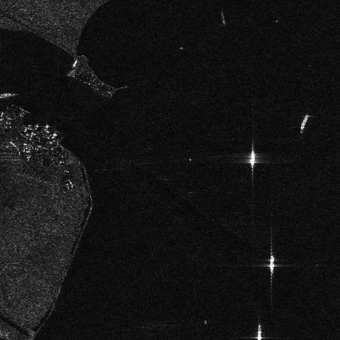
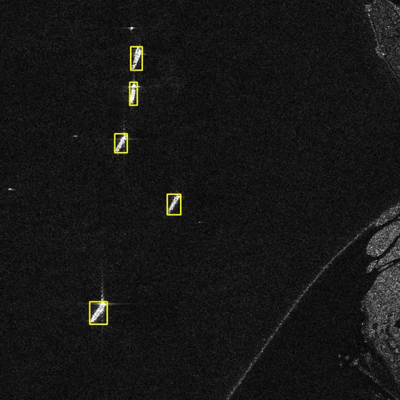
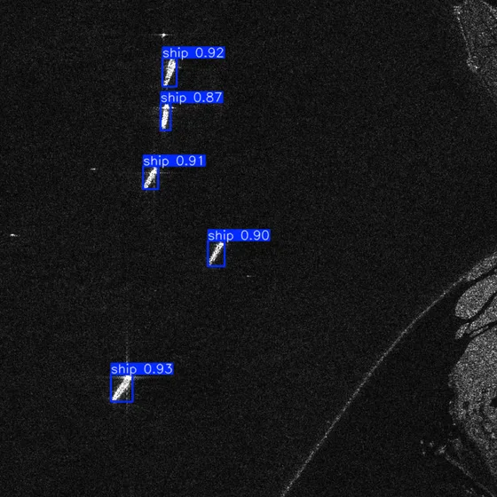

Most SAR ship detection papers design a new network. This study keeps a lightweight network fixed and asks a simpler question: how much does the input image size alone change the result?
Best mAP5094.8%YOLOv8n at 1600 px
Best mAP50:9574.6%+8.0 pp vs 640 px
Model size3.2 Mparameters, unchanged
Price paid5.4×latency, 640 → 1600 px
Stage 1
15 YOLO variants compared on HRSID at 800 px to find compact, strong baselines.
Stage 2
YOLOv8n trained and tested at six input sizes: 640, 800, 1024, 1280, 1344 and 1600 px.
Outcome
Resolution is a simple, strong lever: accuracy and especially localization improve without a larger model.
1 · Motivation
Why SAR Ship Detection Is Hard
Synthetic aperture radar images the sea day and night, in any weather, at high resolution. That makes it valuable for traffic management, navigational safety and coastal surveillance.
The same imaging physics makes detection difficult:
Speckle noise and sea clutter look like small bright targets.
Inshore scenes: harbours, canals and man-made structures scatter strongly.
Dense targets and severe foreground–background imbalance.
Small ships cover only a handful of pixels.

An HRSID test image: bright ships, side-lobe crosses and a cluttered coastline.
HRLE-SARDet, GS-YOLO, EMO-YOLO, LWSARDet, SADW-Det: fewer parameters for real-time use.
Gap. Input resolution decides how many pixels a small ship keeps after resizing, yet it is usually treated as a fixed setting and rarely studied as an experimental variable.
Contribution. A controlled study of the accuracy–resource trade-off of input resolution for a lightweight SAR ship detector: precision, recall, mAP, latency, throughput and peak GPU memory, with deployment guidance.
2 · Materials and Methods
HRSID: High-Resolution SAR Images Dataset
136 panoramic SAR scenes: 99 Sentinel-1B, 36 TerraSAR-X, 1 TanDEM-X
Various imaging modes and polarizations; spatial resolution 0.5–3 m
Cropped to 800 × 800 px patches
5,604 images, 16,951 annotated ships
Large patches keep context: sea clutter, harbours, canals, structures
Split 7 : 2 : 1 into train / validation / test
Ship sizes (MS COCO scale definition)
54.5%
43.5%
small < 32² pxmediumlarge 2.0%
More than half of all ships are small objects. HRSID is therefore a natural benchmark for asking what resolution does to small-object detection.
2 · Materials and Methods
Why Resolution Matters: the Pixel Budget
Input size
Ship (native)
Grid
The square is a 64 × 64 px window of an 800 px HRSID patch. Blue lines are feature-map cells. Raising the input size keeps the ship fixed but makes the cells finer, so the small ship meets the receptive field of the detection layers.
2 · Materials and Methods
Two-Stage Experimental Design
HRSID5,604 images 7 : 2 : 1 split
→
Stage 115 YOLO models input 800 px
→
SelectYOLOv8n compact, strong baseline
→
Stage 26 input sizes 640 → 1600 px
→
Measureaccuracy + latency, FPS, GPU memory
Held constant
Architecture and parameter count (3.2 M)
Dataset split, training strategy, metrics
Bilinear resizing (Ultralytics default)
Varied
Input size: 640, 800, 1024, 1280, 1344, 1600 px
So any change in P, R, mAP or cost is attributable to resolution
Metrics: precision (P), recall (R), mAP50 (IoU 0.5), mAP50:95 (IoU 0.5 to 0.95, a stricter localization test), parameters, FLOPs, inference time, FPS, peak GPU memory.
3 · Experiments
Experimental Setup
Training
Epochs
100
Batch size
16
Optimizer
AdamW (auto)
Initial learning rate
0.002
Momentum
0.9
Weight decay
0.0005
Split
70 / 20 / 10%
Platform
CPU
Intel Core i5-12450H
Memory
16 GB
GPU
RTX 3050 Laptop, 6 GB
OS
Windows 11
Python / PyTorch
3.13.2 / 2.8.0
CUDA / cuDNN
12.9 / 9.1
Ultralytics
8.4.37
A laptop-class GPU on purpose: the cost figures describe what a resource-constrained deployment would see.
3 · Experiments · Table I
Stage 1: Comparing 15 YOLO Models (800 px)
Y axisHover a point for P, R and both mAP values.
YOLO variantYOLOv8n (selected for Stage 2)
Bigger is not better: YOLOv8s tops mAP50 (93.7%) but is weak on mAP50:95 (62.1%). YOLO10n gives the best mAP50:95 (71.1%) with only 2.3 M parameters; YOLOv4 uses 64.3 M for 90.1% mAP50.
3 · Experiments · Table I
Table I in Full (click a header to sort)
Model
P
R
mAP50
mAP50:95
Params (M)
YOLOv8s
92.5
86.2
93.7
62.1
8.1
YOLO11s
92.1
83.9
93.5
61.8
25.8
YOLOv5s
88.2
81.2
93.5
67.5
26.8
YOLO26s
92.0
84.1
93.0
68.5
9.5
YOLOv5n
91.7
84.0
92.8
68.3
2.5
YOLOv9-tiny
93.3
85.6
92.8
69.6
2.0
YOLO11n
91.3
84.3
92.6
68.4
2.6
YOLOv8n
91.9
84.2
92.6
67.5
3.2
YOLO10n
93.5
85.4
92.6
71.1
2.3
YOLO26n
89.8
82.4
91.8
67.4
2.4
YOLO12n
91.4
81.4
91.5
66.0
2.6
YOLOv6
92.5
81.9
91.2
66.2
4.7
YOLOv4
90.6
84.0
90.1
65.1
64.3
YOLOv3-tiny
87.9
79.1
86.5
59.8
12.1
YOLOv7-tiny
90.7
82.4
81.9
54.7
6.2
HRSID test set, 800 px input, values in %. Rows are initially ranked by mAP50 as in the paper.
4 · Results · Table II
Stage 2: Effect of Input Resolution on YOLOv8n
mAP50mAP50:95Hover a column for P and R.
Diminishing returns on mAP50
640 → 1024 px adds +3.4 pp; 1280 → 1600 px adds only +0.2 pp.
Localization keeps improving
mAP50:95 still rises from 72.0% to 74.6% between 1280 and 1600 px: resolution helps box precision most.
4 · Results · Table III
The Price of Resolution
Measure
250 randomly selected test images, fixed batch size. From 640 to 1600 px: latency 4.71 → 25.54 ms, throughput 212.30 → 39.15 FPS, peak GPU memory 211 → 805 MB.
The parameter count never changes, yet cost grows about 5×. A "lightweight" model is not automatically efficient: input size must be budgeted too.
4 · Results · Tables II + III
Choose an Operating Point
Set the throughput your application needs. The explorer picks the input size with the highest mAP50:95 that still meets it, using the paper's measurements on the RTX 3050 Laptop GPU.
Required speed
Sizes
Accuracy-oriented
1600 px: best mAP50 and mAP50:95.
Efficiency-oriented
1024 or 1280 px: a better accuracy / real-time balance.
4 · Results · Table IV
Comparison with the State of the Art (HRSID)
Method
P
R
mAP50
mAP50:95
Params (M)
FLOPs (G)
YOLOv8n-1600px
91.6
87.9
94.8
74.6
3.2
51.2
YOLOv8n-1280px
91.3
87.1
94.6
72.0
3.2
32.7
LD-YOLO
93.5
87.6
94.6
72.0
4.5
12.0
Zhou et al.
92.3
88.9
94.5
63.1
45.6
19.4
GS-YOLO
92.7
89.5
94.3
71.0
24.6
12.8
LWSARDet-Small
92.5
89.3
94.2
66.9
6.45
12.8
LWSARDet-Nano
92.0
87.9
94.1
67.0
1.63
3.4
EMO-YOLO
92.8
87.6
94.1
–
2.0
–
DGSP-YOLO
93.0
86.9
94.0
72.2
–
–
FESAR
93.5
85.8
94.0
–
3.5
46.8
LiteSAR-Net
–
90.9
93.3
–
5.25
–
SIE-YOLO11
–
–
92.9
70.1
–
–
MSFA-YOLO
92.4
–
92.7
67.1
–
–
HRLE-SARDet
–
86.0
92.5
–
1.09
2.5
SADW-Det
–
–
92.1
–
5.53
28.38
GL-DETR
91.4
–
92.1
–
–
–
SDNet
–
87.5
91.1
–
12.1
12.5
YOLO-LDFI
91.9
–
90.7
64.4
2.63
6.7
DRENet
–
82.6
90.0
–
12.0
13.1
DBW-YOLO
90.0
–
88.8
–
–
–
SAR-Net
53.7
80.5
87.5
–
42.6
104.2
Reported values with different splits, input sizes and epochs: a reference, not an identical protocol. 1600 px gives the highest mAP50 and mAP50:95 at higher FLOPs.
4 · Results · Figs. 1–2
Qualitative Results: See the Difference

Ground truth (yellow)

YOLOv8n-1600 px
Sample
Input size
5 · Discussion
What the Results Say
Resolution is a first-class design choice
Without any architectural change, YOLOv8n gains +4.3 pp mAP50 and +8.0 pp mAP50:95 from 640 to 1600 px.
It mostly buys localization
mAP50 saturates near 1280 px; mAP50:95 keeps rising. Small ships get tighter boxes.
Lower resolutions are ambiguous
Missed small ships and extra boxes on bright scatterers appear more often at lower input sizes.
Efficiency is more than parameters
Same 3.2 M parameters, but 5.4× latency and 3.8× peak memory at 1600 px. Budget the input size, not only the model.
6 · Conclusion
Conclusion and Future Work
Compact YOLO models are competitive on HRSID with low model complexity.
Increasing the input size significantly improves detection and localization of small ships.
YOLOv8n-1600 px: 91.6% P, 87.9% R, 94.8% mAP50, 74.6% mAP50:95 with 3.2 M parameters, the highest mAP values among the compared methods.
Choose by application: 1600 px for accuracy, 1024–1280 px for real-time balance.
Next steps
Lightweight feature enhancement, attention and resolution-preserving preprocessing
Deployment tests on embedded and edge devices, detailed FLOPs analysis
Additional SAR ship datasets to check generalization
6 · Conclusion
Check Questions
Why does a larger input size help small ships more than large ships?
mAP50 barely changes from 1280 to 1600 px, but mAP50:95 rises by 2.6 pp. What does that tell you?
The parameter count is constant across all six configurations. Why does inference still get 5× slower?
Why should Table IV not be read as a strict head-to-head ranking?
A shore-based system must process 60 frames per second on the same GPU. Which input size would you choose?
Show answers
Small ships occupy few pixels; downsampling and large strides can shrink them below one feature cell. Upscaling gives them more pixels and better matches the receptive fields.
Coarse detection (IoU 0.5) is already saturated; the extra pixels mainly make the boxes more precise at stricter IoU thresholds.
Convolution cost and activation memory grow with the number of input pixels (FLOPs 32.7 G at 1280 px vs 51.2 G at 1600 px), independent of the weights.
The methods use different splits, input sizes and training epochs; the table is a reference point, not an identical protocol.
1024 px (94.11 FPS) meets it; 1280 px (55.17 FPS) does not. 1024 px gives 93.9% mAP50 and 70.1% mAP50:95.
References
Selected References
S. Wei et al., "HRSID: A High-Resolution SAR Images Dataset for Ship Detection and Instance Segmentation," IEEE Access, vol. 8, pp. 120234–120254, 2020.
X. Xu et al., "Deep learning for ship detection in SAR images: A comprehensive review," Ocean Engineering, vol. 355, 125045, 2026.
J. Niu et al., "LD-YOLO: A Lightweight Dynamic Convolution-Based YOLOv8n Framework for Robust Ship Detection in SAR Imagery," IEEE GRSL, vol. 23, 4000305, 2026.
D. Lv et al., "GS-YOLO: A Lightweight SAR Ship Detection Model Based on Enhanced GhostNetV2 and SE Attention Mechanism," IEEE Access, vol. 12, 2024.
Y. Zhao et al., "LWSARDet: A Lightweight SAR Small Ship Target Detection Network Based on a Position–Morphology Matching Mechanism," Remote Sensing, vol. 17, 2514, 2025.
Z. Wang et al., "The evolution of object detection from CNNs to transformers and multi-modal fusion," Scientific Reports, vol. 16, 7517, 2026.
The paper lists 28 references; see the full text for the complete list.
Thank You
Impact of Input Resolution on Lightweight Small Ship Detection in SAR Imagery
How to cite: Külcü, S. (2026). Impact of Input Resolution on Lightweight Small Ship Detection in SAR Imagery. In 2026 10th International Artificial Intelligence and Data Processing Symposium (IDAP). IEEE. doi:10.1109/IDAP71869.2026.11727884